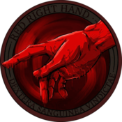

We're a Star Citizen organisation that operates in the 'verse in a structured and organized manner. With a focus on small-team tactics and distributed operations, we aim to provide a rich and varied experience for our members.
Our bigger sessions are held on Saturdays around 17-18:00 UTC and usually last for 4 hours. We also have smaller sessions during the week, utilizing an "on call" system to coordinate with members. We expect our members to attend at least one bigger session per two weeks, but we understand that real life comes first and will work with members to accommodate their schedules.
We welcome anyone who is interested in joining our organisation, regardless of their experience level. However, we do have some requirements for new members. We expect our members to be respectful and professional in their interactions with others, and to adhere to our code of conduct. We also require that our members either have a working knowledge of Star Citizen and its mechanics or a willingness to learn and improve their skills.
If you're interested in joining the 174th Battle Group, please reach out to us through our Discord server linked below. We look forward to welcoming you to our organisation and working together to achieve our goals in the 'verse.
Discord: 174bg.net/discord